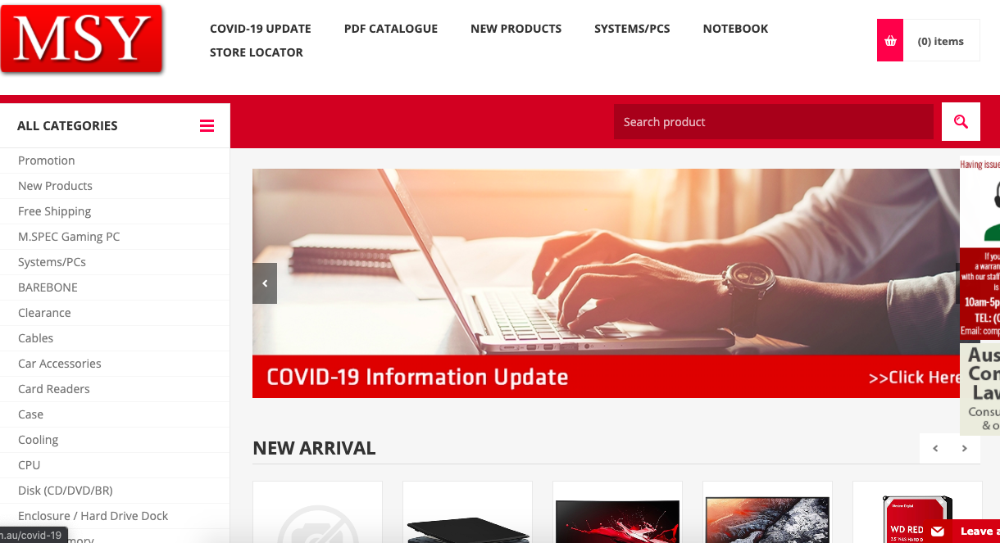
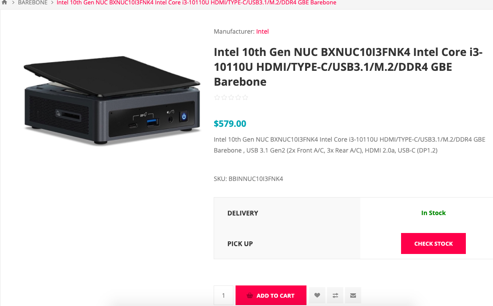
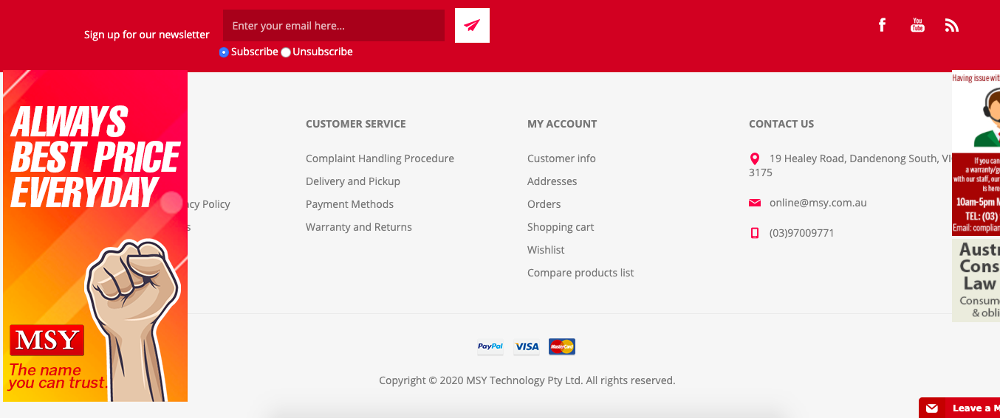
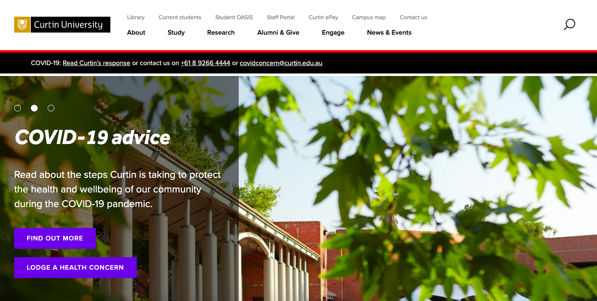
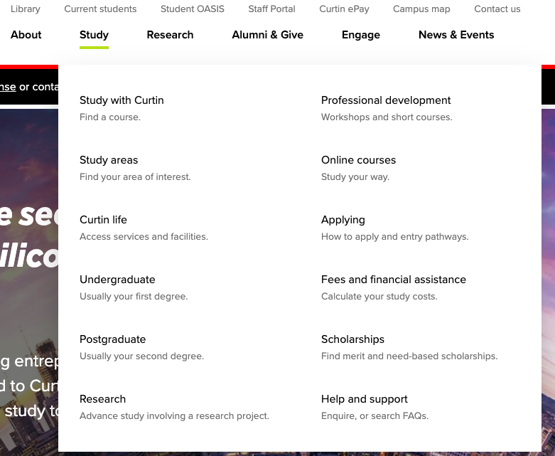
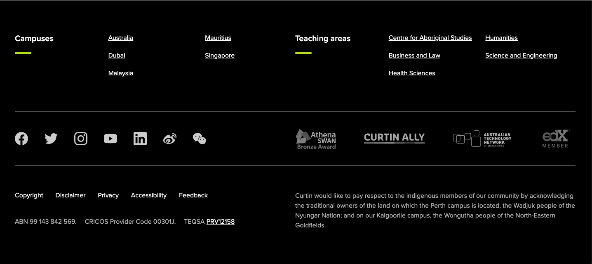
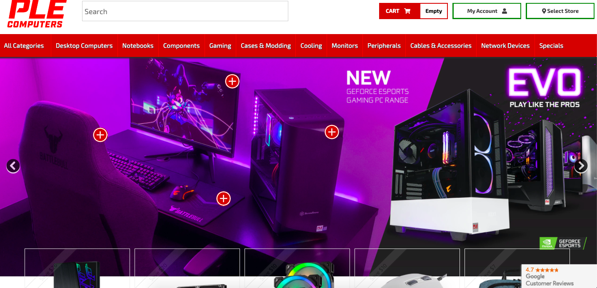
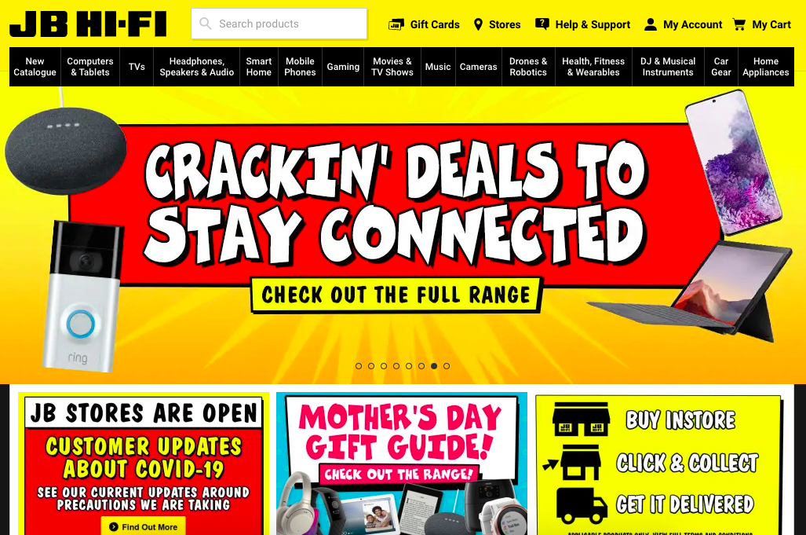

Table of Contents
This report provides an analysis of what makes a good and bad website, and the review of four chosen website. The methods of reviewing the website are based on the content, usability and design, the uniqueness, and the technologies used. The results show that the chosen website has the characteristic of a good website with some flaws. The report finds the good website has some flaws and the wrong website has some good parts.
Website has been at the forefront of the internet. The first website was created by Tim Berners-Lee at CERN and launched on August 6, 1991 (Web Foundation, n.d.). Website invented because Tim Berners-Lee frustrated when he needs to go to check every computer to find pieces of information, he wants which takes much time to find information that store in many different computers. Tim Berners-Lee purposed the technology of information management or now called the world wide web or the web.
Website is a collection of webpages. Commercial, education, and also personal use website as a way to deliver their goal and vision to the massive just by typing the URL in the browser, user can see the page.
A website is consist of HTML (hypertext markup language), CSS (Cascading Style Sheets), and JavaScript. These are the programming language of the web. In a simple term, HTML is the structure of the web page such as the position of the text, the CSS is the styling such as the colour, and JavaScript is to move or animate elements.
A good website consists of the overall design and functionality, such as the clarity and simplicity of the website (Vintage Agency, 2019). It also covers the contents of the website being delivery (Does Your Website Have What It Takes? n.d.). However, a successful website tends to have a solid defined goal which helps to bring out the purpose of the website, outstanding user experience in term of the usability on the website and the uptime where the sites functionality running as is intended to all the time it loaded (Morris, 2018). Besides, a successful website delivered what the audience expected and fulfil their needs.
A failure website tends not to have a clearly defined goal of why it is made. The target audience, on the other hand, is not entirely researched as stated in Vintage agency website (2019). However, design and overall functionality such as navigation, and user experience also contribute to a failed website.
This report will be reviewing two of good websites and two of bad website. These websites reviewed based on the four factors, the content, navigation, design, uniqueness, and technologies.
The method of reviewing the four sites based on content, usability and design, uniqueness, and technologies.
Websites reviewed with a chrome browser. Note that the chrome browser has no third-party plugins installed such as AdBlock to block ads or other elements in a website. It is to make sure, all the website elements are visible and to avoid any of error. The computer screen that used for displaying the website is with a resolution of 1440 x 900.
1.The content or web content is anything that embedded to the site such as the text, images, video and links, the description of the product or services, and the social media link if present on the website, the right message or the first impression when accessing the website.
2.The usability and design are where the website convey its purpose and the style that it represent. An eye-catching design gain the feeling of pleasure of using the website (Favian 2009). Furthermore, simplicity such as navigation and easy to read to decrease distractions. High-quality images are vital in today's era where screen becoming denser with a pixel that in turn, increase the user visibility and engagement in any particular part of the site.
3.The uniqueness of the website gives a value that many useful websites have it owns speciality that differentiates them.
4.The technologies that a website must have at least these three things. The CMS (Content Management System), CDN (Content delivery network) and web analytic. CMS is a management system that will manage the entire website, such as the blog post, products, multimedia, plugins, frameworks (SkyRocket Group, 2020). CDN is essential in improving access to the website globally and to prevent any DDOS (distribute denial of service) attack (What are the benefit of a cdn, n.d.). Lastly is the web analytic, is the method of collecting data from website traffic to be analysed to gain insight that can be useful for website improvement (Hughes, 2019). The technology that some bad website has is the Flash player that is clunky and usually force the user to install. Most websites now built-in HTML5 that supported by many browsers which have replaced flash (Griggs, 2020).
MSY is a store specializing in selling IT equipment or IT related products. Since 1996. MSY is quite famous for its competitive price.
  The content on the website is pretty straight forward. Slides on top for showing crucial information such as discount and ongoing promotions. It also has a carousel feature for new arrival products, but some of the product has no image. MSY uses medium quality image for its product listing, which not suitable if view on many screen resolution. The font used by MSY is Open sans with sans-serif that owned by Google, and it is readable (Matteson, n.d).
For each product are very detailed, including the features of the product, price, and review. Company policy such as shipping, T&C and contacts are clearly shown on the footer. The social media links also spotted, but unfortunately too small.
The navigation is simple, easy to find things. MSY managed to put the navigation menu on the left, and it is shown without clicking anything to reveal, very handy compare to many website stores. The search function is on the top right. It is essential to have as some users prefer to find something by typing on the search box. There is a floating poster that gets in the way when scrolling down, the left section area of the footer is block by it. Information on the left side will be hard to see. The design is quite plain with the primary colour of the site is white and red, and the logo looks cheap.
The uniqueness of the website to offer is how brief it is for the audience, which is the buyer. There is no navigation bar that generally on top, but it is on the left.
MSY website uses seven technologies. These technologies consist of the CMS, frameworks and analytics. The CMS used is from NooCommerce, not that popular but its get the jobs done. The analytics used is from Google Analytics. It gathers traffic information such as sells, leads, and many other critical points that can be used to improve the website. This website has no Flash player.
Curtin is a university website based in Western Australia. Curtin website changes its design and structure now and then. Nevertheless, Curtin website is much more appealing to see than before.
  Images on the website are very professional, clean, and high quality. Very nice to see on a university website. The audience intended to be current and future students, parents, and staffs. Furthermore, The defined goal of the website shows it very clear. The font is very readable. The list of fonts shown above is what Curtin used, which is the Proxima-nova, Helvetica, Arial, sans-serif. The service is very well visible, for the most targeted user, they will find it pleasing to see the study areas. The social media link is apparent with appropriate on the footer. It shows the social presence is strong.
The navigation of Curtin website is straightforward to understand. It places the tabs on the very top instead just beside the logo. It has almost all the information would expect, such as the study tabs. It does not have the feature of when the mouse hovers on tabs, and it will show the dropdown automatically. There two search boxes, one on the top right, and one just around the middle of the page. The top right is to search for everything on the web site, but the middle search box is to search for courses. The font is very readable. The list of fonts shown above is what Curtin used, which is the Proxima-nova, Helvetica, Arial, sans-serif.
The colour of the website is appropriately balanced. It uses white, black, and yellow that set a good mood towards the company.
Curtin website uses seven technologies. These technologies consist of the CMS, frameworks and analytics. The CMS used from WordPress. Even though there is no CDN showed, but it can be that it already integrated into WordPress. Curtin uses Google analytics to gain insight into its traffic. The frameworks mostly for the JavaScript libraries to simplify the designing process
PLE is an IT equipment store, even though many of the contents appear on the homepage tends to show off gaming related equipment, it also sells office and commercial IT equipment.
O the homepage, most of the times showing gaming related equipment and promotions. The font they use is Exo with sans-serif. It is not that pleasantly readable in most cases, in other words, standard. PLE manages to use high-quality image its product listing, which is good. On the footer, The company policy such as shipping, T&C and contacts clearly shown as well as the social media links are very well visible.
The menus are on top, with an extended dropdown menu which makes The navigation is relatively easy. But sometimes the dropdown menu freezes. Furthermore, there is one tab located on the very left, 'All Categories' is just a waste of space. The first row of the products placement overlaps onto the hero section. The logo is well designed and looks very sharp. There is a big search box on top beside the logo that is very responsive. Users can sign in to make an account to save shopping charts list or subscribe to its newsletter.
The menus are on top, with an extended dropdown menu. However, there is one tab located on the very left, 'All Categories' is just a waste of space. The first row of the products placement overlaps onto the hero section. The logo is well designed and looks very sharp. There is a big search box on top beside the logo that is very responsive. Users can sign in to make an account to save shopping charts list or subscribe to its newsletter.
PLE is unique with many of the products is a showcase on the homepage, and some users might hate it or like it.
PLE uses eleven technologies, including Analytics, and CDN. The CMS not shown on Larger.io, but it should have it. PLE uses a different kind of analytics advertising technologies, such as google analytics, Infer, AdWords, and Facebook pixels.
JB HI-FI established in 1974, and it is now the most prominent stores that offer the most extensive range of games, home appliances, music, DVD, and so much more (Jbhifi.com.au).
The homepage of JB HI-FI is crowded with products. Left, right, top and bottom contain posters and products. It is not a good thing because it makes a distraction. Despite that, the description of the product is very detailed, including the prices, feature, and review. Users can sign in to make an account to save shopping charts list or subscribe to its newsletter. On the footer, the company policy like shipping, T&C and contacts are clearly shown as well as the social media links.
JB HI-FI is very structured that makes the navigation very smooth. The navigation tabs, when hover by mouse, it directly reveals the categories and selections. However, the slides or the hero is too fast and quite big. The outside border sometimes clunky that makes the site very slow to scroll. Despite the slowness, JB HI-FI uses high-quality images. It is a good sign that JB HI-FI focuses on quality. JB HI-FI uses Roboto an Arial with sans serif font, which is not too bad, and search boxes are on top and responsive.
JB HI-FI is popular with a bright yellow colour that differentiates between their competitor's website and bombards with products on the homepage.
JB HI-FI uses seven technologies including the CMS, Analytics, and CDN. These three things are crucial in a successful website, and JB HI-FI successfully managed to have these. In addition, JB HI-FI uses Shopify as its CMS. Shopify is very popular as it is easy to make a website and manage its content. JB HI-FI uses Google analytics to gain insight. Moreover, having CDN to the website, it means JB HI-FI is serious in ensuring the security and stability to their website.
In conclusion, good websites successfully implemented the four criteria. The first criteria are the content that focuses on the text, images, and links. The second is the usability and design that focus on the style and the navigation of the website. The third is the uniqueness that is something differentiate the particular website with others, and lastly is the technologies used by the website. The two good and the two bad websites have those criteria in place but still not very well implemented.
About Us. (n.d.). Retrieved from https://www.jbhifi.com.au/pages/about-us
Akamai. (n.d.-b). What are the Benefits of a CDN? Retrieved April 28, 2020, from https://www.akamai.com/us/en/cdn/what-are-the-benefits-of-a-cdn.jsp
Does Your Website Have What It Takes? (n.d.). Retrieved from https://www.spritzweb.com/resources/good-website-characteristics.html
Flavian, C., Gurrea, R., & Orús, C. (2009). Web design: A key factor for the website success. Journal of Systems and Information Technology, 11(2), 168-184. doi:http://dx.doi.org.dbgw.lis.curtin.edu.au/10.1108/13287260910955129
Griggs, A. (2020, March 15). The End of Flash in 2020? Converting From Flash to Html5. Retrieved from https://turbofuture.com/computers/The-End-of-Flash-in-2020-Converting-From-Flash-to-HTML5
Hughes, J. (2019, February 20). What Is Web Analytics? Your 101 on Analytics and How to Get Started. Retrieved from https://themeisle.com/blog/what-is-web-analytics/
Morris, C. (2018, June 25). How to Make a Successful Website: 10 Critical Factors. Retrieved from https://www.searchenginejournal.com/how-to-make-a-successful-website/257617/
SkyRocket Group. (2020, April 3). Why A Content Management System Is Important. Retrieved from https://skyrocketgroup.com/why-is-a-content-management-system-important/
Vintage Agency. (2019, December 6). Web Design Review Checklist: What Is Good Design? Retrieved from https://vintage.agency/blog/the-ultimate-web-design-review-checklist/
Foundation. (n.d.). History of the Web. Retrieved April 17, 2020, from https://webfoundation.org/about/vision/history-of-the-web/